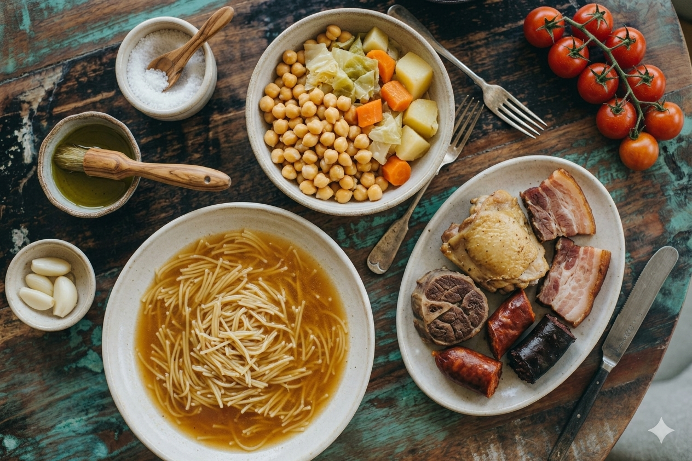

Este cocido tradicional es un plato reconfortante y delicioso, con todo el sabor de siempre y mucho más fácil de disfrutar de lo que imaginas. Una joya de nuestra gastronomía que combina legumbres, verduras y carnes en tres vuelcos perfectos.
Preparación